Nuestros productos
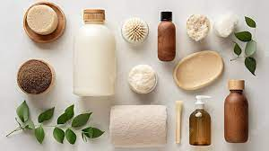Nuestros productos abarcan un amplio rango de usos para el cuidado integral de tu cuerpo
¿Qué son los productos para el cuidado de la salud? Los productos de cuidado personal se aplican sobre la piel, dientes o mucosas del cuerpo y tienen como objetivo la higiene, la estética, o la neutralización o eliminación de parásitos.
Cuidado capilar
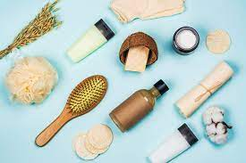Estos productos son los cosméticos capilares. Se los define como «preparados destinados a entrar en contacto con el pelo y con el cuero cabelludo para limpiarlos, promover la belleza, modificar su apariencia, y/o protegerlos con el fin de mantenerlos en buenas condiciones
Lociones capilares
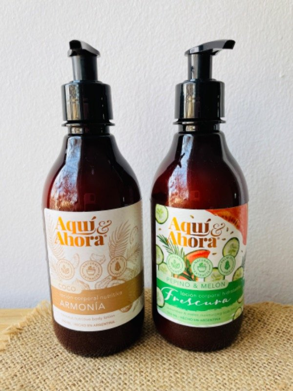Las lociones capilares son productos para el pelo de textura líquida y no untuosa que ayudan a tratar preocupaciones capilares de lo más diversas, como la caída del cabello, la aparición y prevención de la caspa o problemas por irritación del cuero cabelludo.
Shampues
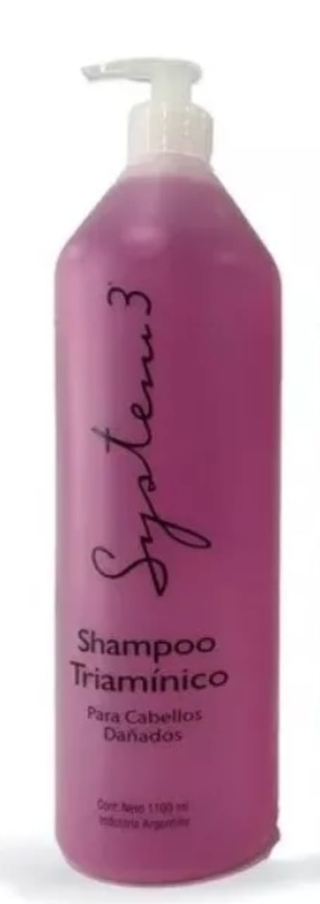Un shampoo es un preparado cosmético, detergente, que se utiliza para limpiar el cabello y cuero cabelludo, además de dar brillo, belleza y suavidad al cabello.
Acondicionadores capilares
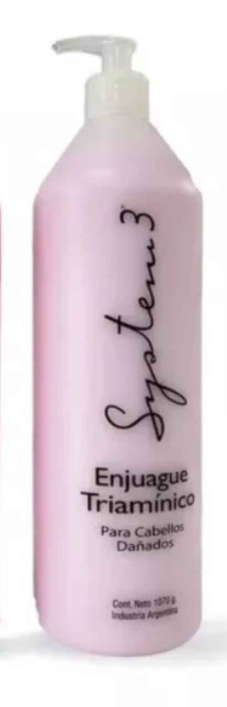Los acondicionadores capilares reparan, en cierta medida, los daños que se han producido en el cabello, tienen acción antiestática y favorecen el peinado. Así, el pelo luce brillante y suave de nuevo. En épocas pasadas, era frecuente el empleo de la yema y la clara del huevo cuando el cabello se mostraba seco.
Cuidado facial
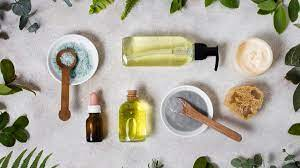La higiene facial logra eliminar las células muertas que se localizan en la capa más superficial de la piel, en la cual actúan varios factores externos contaminantes, consiguiendo que los poros se obstruyan y la piel obtenga hidratación y oxígeno.
Aguas
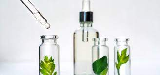El agua micelar es un producto cosmético que está formado a base de micelas, estas son un grupo de moléculas que logran atraer y retirar suciedad, impurezas y sebo, dejando la piel limpia y fresca. No suele contener colorantes, perfumes o alcoholes, componentes que son agresivos con la epidermis.
Cremas
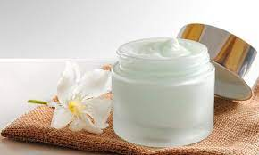En farmacia, una crema es un preparado semisólido para el tratamiento tópico. Las cremas son a base de agua (a diferencia de un ungüento o pomada) contienen de un 60 a 80 % de agua, para poder formar un líquido espeso y homogéneo.
Mascarillas
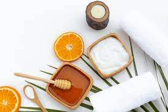Una mascarilla facial es un producto cosmético de textura normalmente cremosa o pastosa, que se aplica de manera ocasional sobre el rostro con el objetivo de mejorar el estado de salud de la piel.
Cuidado corporal
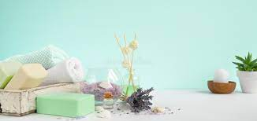Se puede definir la higiene corporal como el conjunto de cuidados que necesita nuestro cuerpo para aumentar su vitalidad y mantenerse en un estado saludable.
Jabones
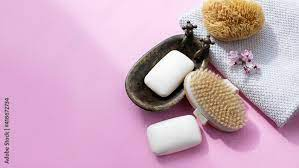Ayudan a mantener los aceites naturales (propios) de la piel, proporcionando suavidad y elasticidad. Son antioxidantes y buenos tónicos. Algunos tienen la propiedad de estimular la regeneración celular, por lo que ayudan a reparar y mantener la piel sana.
Cremas
Las cremas corporales son un magnífico recurso para mantener la salud de la piel. Desde cremas ligeras a fórmulas densas y ricas, las cremas corporales de hoy en día dan cobertura a todas las pieles. Trabajan distintas necesidades: hidratación, firmeza, flacidez corporal.
Aceites
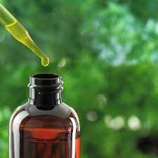Los aceites corporales se recomiendan para todo tipo de pieles, especialmente pieles secas y extra secas. Modo de usar: Agite el producto antes de usar. Durante el baño, aplique en todo el cuerpo, excepto en el rostro, luego enjuague. Tambien puede ser usado puro sin enjuague si asi lo desea.
Nuestras recetas
Preparamos según arte todo aquéllo que necesites para cuidar tu salud
Recetas magistrales
Una fórmula magistral es un medicamento preparado por el farmacéutico de manera individualizada para un paciente. En enfermedades dermatológicas es muy frecuente que los pacientes precisen la aplicación de fórmulas magistrales.
Recetas caseras
Las hierbas medicinales (o remedios herbales) son plantas usadas como medicamento. Las personas las usan para ayudar a prevenir o curar una enfermedad. Las usan para aliviar síntomas, incrementar la energía, relajarse o perder peso. Los remedios herbales no son regulados ni probados como los medicamentos.
Te dejamos algunos ejemplos. Consultanos sin compromiso
Recetas para la tos
Recetas para el dolor de garganta
Recetas para el resfrío
Aromoterapia
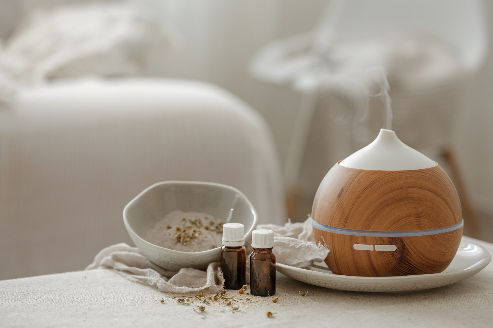La aromaterapia es el uso de los aceites esenciales de las plantas para mejorar el equilibrio de la mente, el cuerpo y el espíritu. La usan los pacientes de cáncer para mejorar la calidad de vida y reducir la tensión, la ansiedad, el dolor, las náuseas y los vómitos que causa el cáncer y su tratamiento.
En nuestro gabinete, los especialistas te indicarán cuál es la esencia adecuada para vos
Nuestros cursos
Contamos con una variedad de cursos todos los meses en diferentes horarios
Anotate en el que más te interese
Salud estética
A cargo de la Dra. Buena, Alma
Salud bucal
A cargo de la Dra. Sonrisa, Felicitas
Salud corporal
A cargo del Dr. Delgado, Alejo